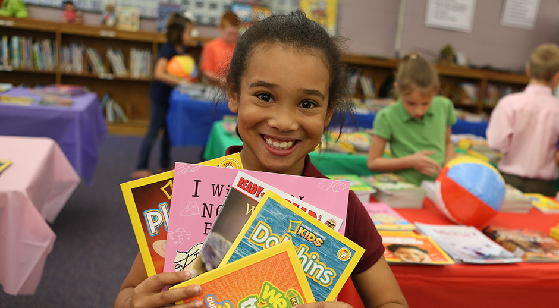
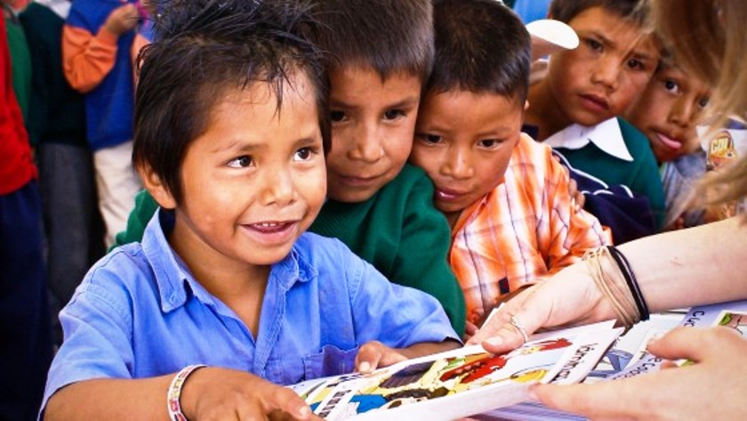
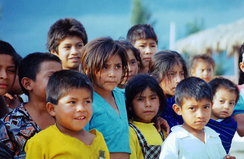

About Us



Seekho India is a not-for-profit organization working in India for over 65 years, focusing on alleviating poverty and social injustice.
We do this through well planned and comprehensive projects in health, education, livelihoods and disaster preparedness and response.
Our overall goal is the empowerment of women and girls from poor and marginalised communities leading to improvement in their lives and livelihoods.
While Seekho India has been working in India since 1946, it formally arrived in the country in 1950, through the signing of the Indo-CARE Bilateral Agreement.
Over the years, Seekho India has actively contributed to the country’s overall social development through various interventions.